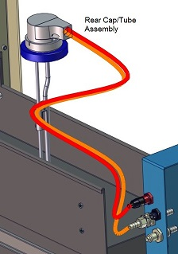
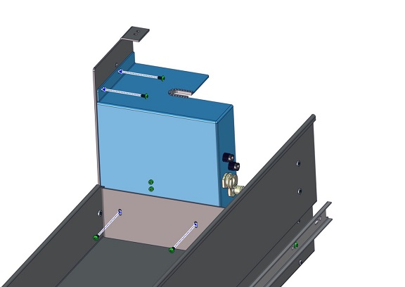

This procedure describes how to remove the Wash Buffer Supply Drawer from the DxI instrument.
When to Perform
Perform this procedure when installing, replacing, or upgrading the Wash Buffer Supply Drawer.
Caution: Use proper
PPE when removing the drawer. Handle the Cap/Tube Assembly with care to avoid buffer contamination and damages to the cap/tube components.
Open the upper-right front cover.
Remove the power from the motors by turning off the switch on the Power Distribution PCB labeled "All DC power (except CPU and reagent coolers)."
Remove the Wash Buffer Supply Drawer.
Figure 216: New Wash Buffer Supply Drawer
Locate the Wash Buffer Supply Drawer.
Gently pull the drawer out.
Unscrew the Cap/Tube Assemblies from the Wash Buffer containers.
Disconnect both sensor/tube connectors on the Bulk Fluid Tray Interface PCB cover.
Note: Turn the sensor lock-caps counter-clock-wise to loose the connectors.

Free the Cap/Tube Assemblies connectors from the plastic holders on the right rear end of the drawer wall.
Remove the Cap/Tube Assemblies from the drawer and set them to the side.
Remove the Shims from both Wash Buffer containers and set them to the side.
Remove both Wash Buffer containers from the drawer and set them to the side.
Note: Wash Buffer containers can be reused if they are full or half-full.
Remove the Bulk Fluid Tray Interface PCB cover to gain access to the Bulk Fluid Tray Interface PCB and the Selector Valve.
Note: Remove the two screws on the top left corner and two screws on the bottom drawer wall to remove the cover. To remove the cover completely out, disconnect the Selector Valve power connection J2 and sensors connections J3 and J5 on the PCB.

Disconnect the serial cable from J1 connection on the Bulk Fluid Tray Interface PCB.
Note: The serial cable will be reused, be careful not to bend the connection pins and screws.
Note: If the serial cable is routed through the plastic holder, then free the cable from the holder.
Locate the Wash Buffer output tubing from the instrument to the Selector Valve.
Note: If the Wash Buffer output tubing is routed through the plastic holder, then free the tubing from the holder.
Clam the output tubing and cut off the tubing on the valve output connector.
Note: The output tubing will be reused, do not cut the output tubing too short.
Remove the Chain attached to the left side drawer.
Remove the Ground Strap attached to the left side drawer.
Note: Screws for the Chain, screw and star-washer for the Ground Strap will be reused, do not lose them.
Place the Cap/Tube Assemblies and shims in the drawer.
Depress the levers on drawer slides and gently pull the drawer out from the instrument.
Note: Left side clip: lift up to free the left slide. Right side clip: push down to free the right slide.
Remove the slide rails from both sides of the drawer.
Note: The rails and screws will be reused on the new drawer.
Figure 217: Old Wash Buffer Supply Drawer
Locate the Wash Buffer Supply Drawer.
Gently pull the drawer out.
Unclip the Quick tube-connectors on both Cap/Tube Assemblies and set them to the side .
Remove the Cap Assemblies from the containers and set them to the side.
Remove both Wash Buffer containers from the drawer and set them to the side.
Note: Wash Buffer containers can be reused if they are full or half-full.
Locate the Wash Buffer output tubing from the instrument on the Selector Valve.
Clamp the output tubing and cut off the tubing from the Selector Valve output connector.
Note: The output tubing will be reused, do not cut the tubing too short.
Remove the Bulk Fluid Tray Interface PCB cover and disconnect the serial cable from J1 connection on the PCB.
Note: The serial cable will be reused, be gentle not to bend the pins.
Remove the Chain attached to the left side drawer.
Note: Remove the bracket attached the left side drawer for better access to the chain screws.
Remove the Ground Strap attached to the left side drawer.
Note: Screws for the Chain, screw and star-washer for the Ground Strap will be reused, do not lose them.
Place the Cap/Tube Assemblies and Quick tube-connectors in the drawer.
Depress the levers on drawer slides and gently pull the drawer out from the instrument.
Note: Left side clip: lift up to free the left slide. Right side clip: push down to free the right slide.
Remove the slide rails from both sides of the drawer.
Note: The rails and screws will be reused on the new drawer.